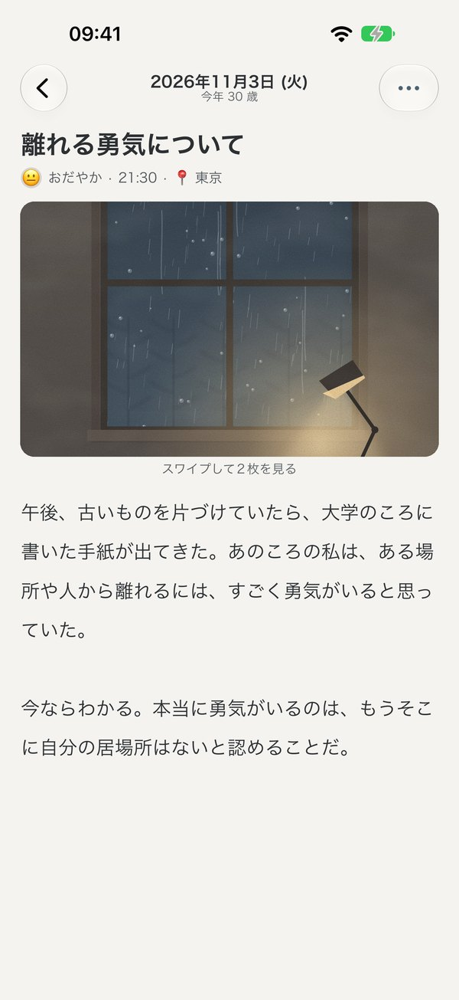
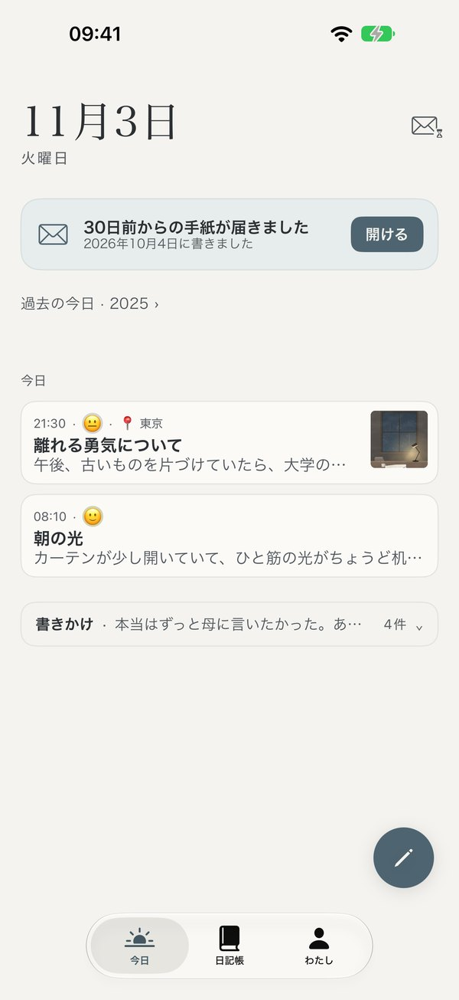
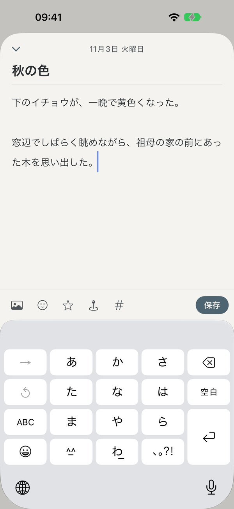
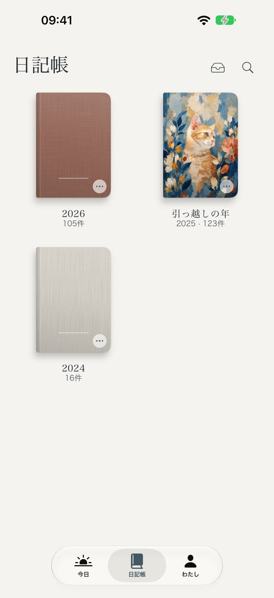
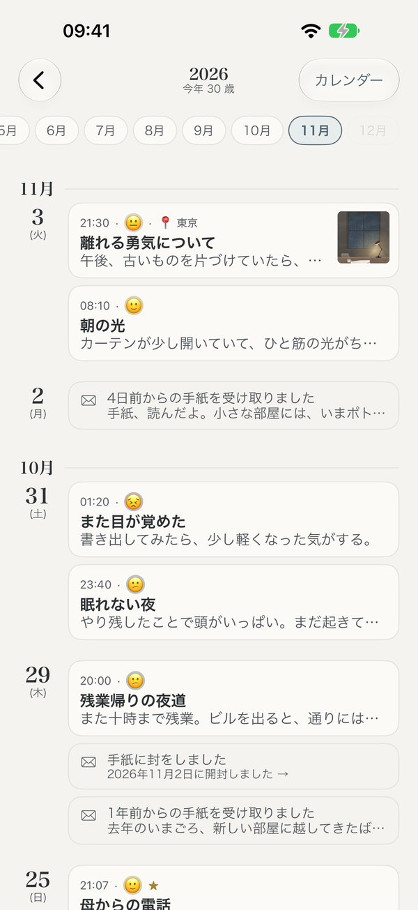
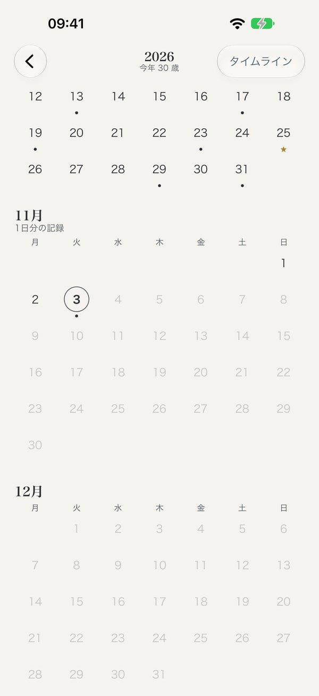
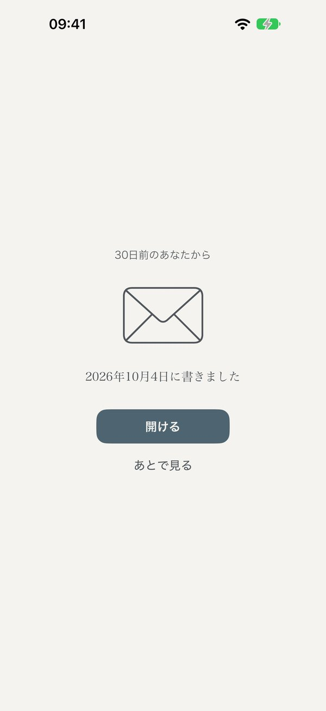
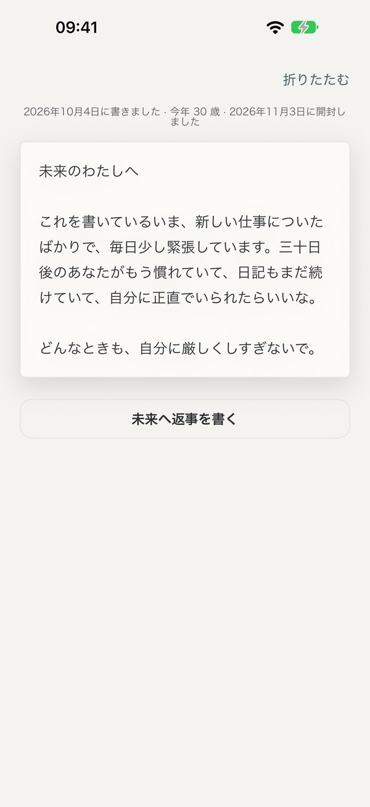
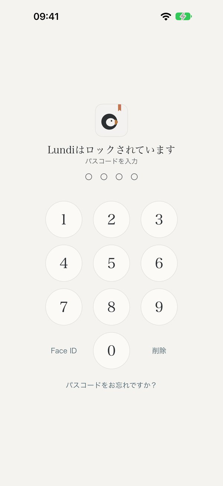

プライベート · 安全 · 静かな日記帳
静かに、
ありのままを書く
登録なし、広告なし、誰にも見られません。
しっかり鍵がかかり、なくならず、いつでも持ち出せます。日記はあなたのデバイスとあなた自身のiCloudにだけ。
無料ダウンロード · iPhone、iPad、Mac · iOS 17・macOS 14 以降


静かに書く
開けば、すぐに書ける
今日の日付と、ひとことの問いかけ。その下は、まっさらな紙です。気分や写真、いまいる街を添えても、数行だけ書いても大丈夫。途中でやめても消えないので、書きたくなったらまた戻ってきてください。

残す
一年で、一冊の本
一年ごとの日記が、自動で一冊の本にまとまります。名前を付けて、表紙を選んで、好きな中紙を選んで。何年か経てば、本棚にはあなたが過ごしてきた日々が並びます。



毎年、好きな表紙を選んで
ふり返る
どの日にも戻れる
タイムラインで1件ずつ読み返したり、一年分のカレンダーで日付をタップしたり。探したいものがあれば、検索ですぐに見つかります。


タイムカプセル
未来の自分へ、大切な人へ
未来の自分に手紙を書いて、開ける日を選びます。その日までは封をしたまま、誰も読めません。その日が来たら、Lundiがそっとお知らせします。読み終えたら返事を書いて、もっと先の未来へ送ることもできます。
パートナーや家族、友だちに書くこともできます。手紙はまず自分のレターボックスにしまっておき、選んだ日になったらお知らせするので、PDF、画像、封筒で送れます。


安全・プライベート
あなただけのもの
iPhoneのパスコードとは別に、Lundiだけのパスコードを設定できます。iPhoneのパスコードを知っている人でも、すぐには開けません。
誰かが「パスコードをお忘れですか？」で再設定すると記録が残り、次に開いたときにわかります。
アプリのロック、日記帳のロック、レターボックスのロック。Face ID、Touch ID、パスコードで開けます。
Lundiがバックグラウンドに移ると画面を隠すので、アプリの切り替え画面に日記は映りません。

なくならない
書いたものは、消えない
手を止めると1秒で保存。書きかけの日記も、途中で中断した日記も残しておきます。
「保存しますか？」とは聞きません。保存済みの日記を直すときも、保存するまで元の文章はそのまま残ります。
削除した日記は「最近削除した項目」に30日間残ります。
iCloud同期をオンにしておけば、機種変更や再インストールのあとも、あなたのiCloudから日記が戻ってきます。
ずっとあなたのもの
日記は、いつまでもあなたのもの
公開された汎用フォーマット（.zip）。新しいiPhoneでも、ほかのアプリでも、まるごと復元できます。
日記を1件ずつテキストファイルに書き出して、どこでも開けます。
本のように組版して、印刷・製本できます。
なくしたり、ログインできなくなったりするアカウントはありません。引っ越しも簡単：Markdown、テキスト、一般的な日記アプリの書き出しファイルに対応しています。
わたしたちの約束
- 日記は、わたしたちにも見えませんアカウントもサーバーもありません
- 広告なし、トラッキングなしデータを売らず、アプリでの操作も記録しません
- 無料の機能は、ずっと無料あとから有料になることはありません
- 永久版は、ずっと永久版新しいプランが出ても内容は減りません
- いつでも見られて、持ち出せるProでも、そうでなくても
- 催促なし、連続記録なし久しぶりに戻っても、ちゃんとここにあります